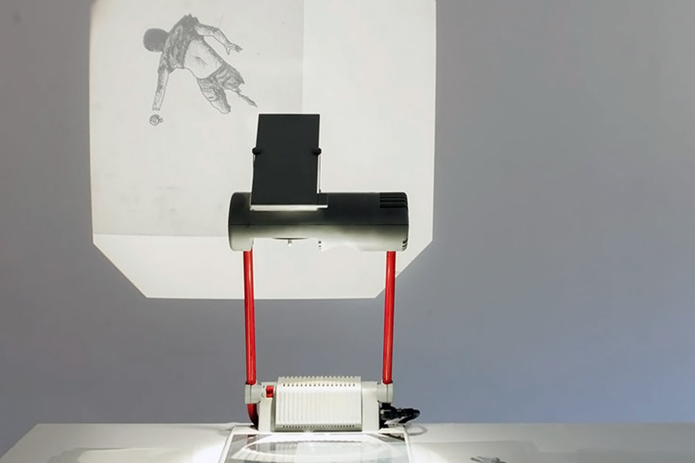
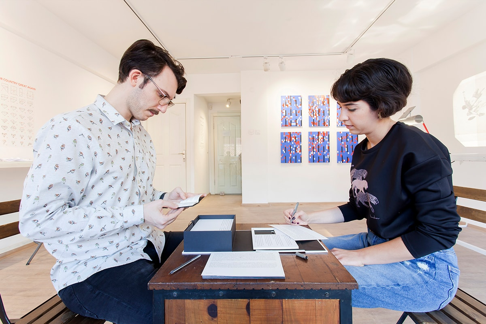
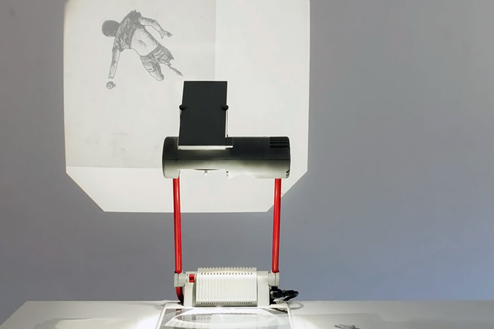
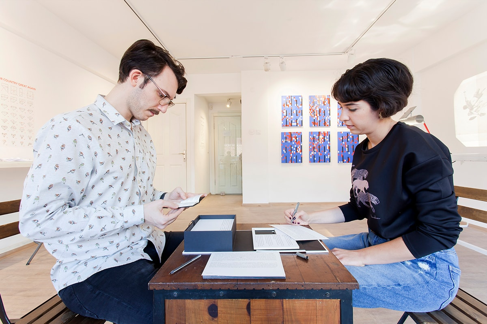

Survival Kit
Exhibition in the framework of the 15th Istanbul Biennial
Dates
September 8 — October 7, 2017
Venue
Space Debris
Kemankeş Mahallesi, Hoca Tahsin Sokak, No:15, Istanbul
The exhibition sets out to raise questions on subtlety in artistic practices within countries that develop conservative political regimes, in this instance Turkey and Russia, and invites artists to research possible methodologies of survival in the context of (self-)censorship.
While relations between the two states have been obscure lately, a spectrum of almost identical patterns occurs, particularly concerning consistent cuts of support for contemporary culture in all forms. A point at which socio-political art discontents both governments is by far gone and a vast majority of emerging artists lives in a state of uncertainty being unprotected from the forms of pressure they expect to follow.
Survival Kit can be perceived as an attempt to establish a certain framework that may or may not be mandatory for contemporary art to function in the future of censorship to come. By collaborating for six months, five Turkish and five Russian artists researched different methodologies, such as camouflage and irony, to create works that are both united by the idea of subtle art yet divided by their specific subjects & practices.
Artists
Larissa Araz, Cansu Çakar, Özgur Demirci, Didem Erk, Dmitriy Filippov, Evgeny Granilshchikov, Dmitriy Lyashenko, Irina Petrakova, Marina Ragozina, Eşref Yıldırım
Press
"Collective Çukurcuma'dan Rusya ve Türkiye'de hayatta kalmak için bir sergi: Survival Kit"
Açık Radyo, 03.10.2017 (TR)
"KAPI KOMŞUMUZ 15. İSTANBUL BİENALİ"
XOXO Digital, 30.08.2017 (TR)
"Hayatta Kalma Rehberiniz"
Artful Living, 24.08.2017 (TR)
Website
Photos
Kayhan Kaygusuz
 


